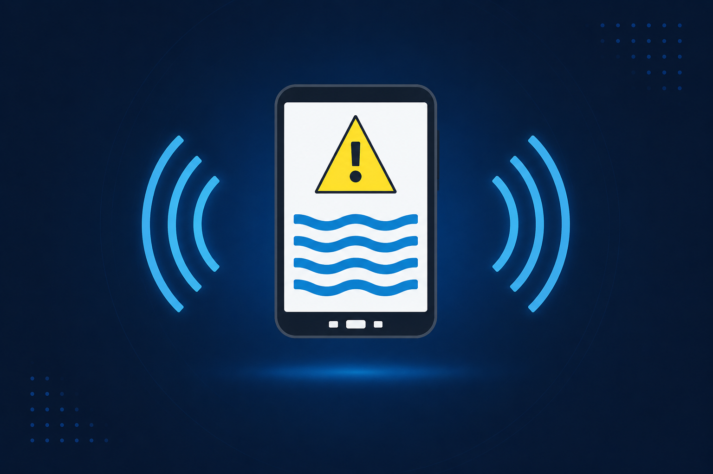

OrbitFlood
Monitoramento Inteligente Contra Enchentes
Tecnologia inspirada na indústria espacial para monitorar riscos de enchentes urbanas e proteger comunidades vulneráveis.
Conheça a SoluçãoTecnologias do OrbitFlood
O OrbitFlood integra tecnologias modernas para monitoramento e prevenção de enchentes urbanas.
Dados Satelitais
Uso de dados climáticos inspirados em satélites meteorológicos para monitoramento ambiental.
Sensores Inteligentes
Sensores responsáveis pelo monitoramento do nível da água em regiões vulneráveis.
Plataforma Web
Interface moderna para visualização de alertas e informações climáticas.
Monitoramento Climático
Análise de dados ambientais para classificação de riscos de enchentes.
Objetivos do OrbitFlood
O OrbitFlood busca utilizar tecnologia e monitoramento climático para minimizar impactos causados por enchentes.
Prevenir Enchentes
Detectar riscos antecipadamente para evitar danos materiais e perdas humanas.
Reduzir Riscos Urbanos
Auxiliar comunidades vulneráveis por meio de monitoramento climático inteligente.
Resposta Emergencial
Permitir ações rápidas diante de situações críticas relacionadas a enchentes.
Público-Alvo
O OrbitFlood foi desenvolvido para auxiliar pessoas, organizações e órgãos responsáveis pela prevenção de enchentes urbanas.
Moradores
Pessoas residentes em áreas sujeitas a enchentes e alagamentos.
Prefeituras
Órgãos públicos responsáveis pelo planejamento urbano e segurança.
Defesa Civil
Equipes de resposta emergencial em situações de risco climático.
Comunidades Vulneráveis
Regiões urbanas mais afetadas por enchentes frequentes.
Benefícios do OrbitFlood
O OrbitFlood oferece vantagens importantes para prevenção de enchentes e redução de riscos.
Alertas Rápidos
Notificações sobre possíveis riscos de enchentes em tempo hábil.
Redução de Prejuízos
Ajuda comunidades a se prepararem para minimizar danos materiais.
Monitoramento Contínuo
Coleta constante de dados climáticos para melhor tomada de decisão.
Mais Segurança Urbana
Apoio à prevenção e resposta emergencial em áreas críticas.
OrbitFlood no Dia a Dia
Veja como o OrbitFlood pode ser utilizado para monitoramento preventivo de enchentes.
Simulação de Monitoramento
Status Atual
⚠ ALERTA DE ENCHENTE
